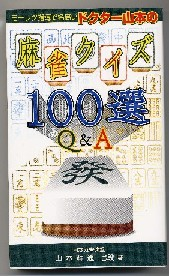

竹書房出版の「麻雀クイズ100選(\400/4-8124-0763-X)）」。ひさしぶりのユニークな本。新書版だが、360ページもある分厚い本（正確に言うと、発売は竹書房だが発行は麻雀博物館）。

著者は山本輝通という人。表紙タイトルにドクター山本とあるが、これは今マージャンプロではやりの「ファンタジスタ○○」とか、「山彦返しの○○」というような二つ名ではない。桐生市で病院を経営するれっきとしたお医者さん。
もちろんマージャンプロでも何でもなくて、日本麻雀連盟という、いまでも二十二(アルシーアル)麻雀をプレーする団体の会員。
中身は第１章が多門張クイズ、第２章が二十二麻雀の点数計算習得問題、第３章がルールやマナーの習得関係。
メインコンテンツは第１章の多門張クイズ。多門張の基本形が網羅されているので、熟読玩味すれば大いに参考になりそう。しかしこの本のユニークなところは第２章にある。
二十二(アルシーアル)麻雀の得点は４捨６入計算法。その４捨６入計算法を、第２章で120ページ余にわたって懇切丁寧に記述してある。
しかし世の中はダブル切り上げ、トリプル切り上げ計算が全盛で、純麻雀となると符計算そのものが存在しない。そこで現実問題、一般のプレーヤーが４捨６入計算を身につける必要性はほとんど無い。そこで日雀連の会員が著した本でも、点数計算は切り上げ式で記述してあるのが普通である。
そんな状況の中での４捨６入計算の解説は、時計の針が逆戻りしたような感じがしないでもない。しかし逆に言えば、一般のプレーヤーが４捨６入計算を知りたいと思っても、そのチャンスが無いのもたしか。
また４捨６入計算法を理解することは、計算の基礎を理解するうえで役に立つ事も間違いない。その意味で、この本は非常にユニーク。定価800円は、けっして高くない。
|